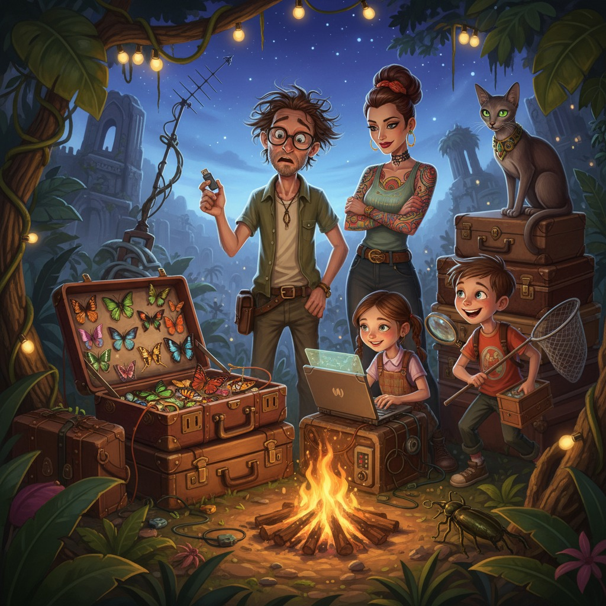

Семья Завитушкиных была из тех редких семей, про которых соседи говорят шёпотом: «Странные, конечно, но какие-то... счастливые. Завидно даже». Их дом в подмосковном коттеджном посёлке легко узнавался по трём признакам: спутниковой тарелке на крыше размером с детский бассейн, надписи «ОСТОРОЖНО, НАСЕКОМЫЕ» на почтовом ящике и татуировке в виде сатурнианских колец на запястье хозяйки.
Олег Завитушкин, ведущий инженер-конструктор одного уважаемого космического КБ, был человеком, способным в уме рассчитать траекторию межпланетного зонда, но стабильно не способным найти собственные очки — несмотря на то что они, как правило, находились у него на лбу. Лариса Завитушкина, его жена и владелица трёх тату-салонов под гордым названием «Вечная Игла», управляла персоналом, клиентами и мужем с одинаковой железной грацией. На её левом плече красовался собственноручно эскизированный компас — символ, который она считала автобиографическим.
Их дочь Аврора в свои двенадцать лет уже дважды взламывала домашний роутер «в образовательных целях» и однажды перепрограммировала «умную» кофемашину так, что та начала варить кофе строго по расписанию пробуждения каждого члена семьи. Сын Бруно, восьмилетний исследователь вселенной, держал в своей комнате сорок два жука, семнадцать образцов минералов, черепаху Архимеда и мечту однажды открыть новый вид паука.
И наконец, Клеопатра — египетская мау дымчато-серебристого окраса, существо настолько убеждённое в своём царском происхождении, что ела исключительно из фарфоровой миски с золотым ободком и демонстративно отворачивалась, если кто-то осмеливался разговаривать с ней без должного почтения.
---
Конференция называлась «AeroSpace Frontiers — Amazon Edition» и проходила в исследовательском лагере в венесуэльских джунглях по инициативе одного эксцентричного бразильского миллиардера, убеждённого, что «наука лучше думается под звуки обезьян». Олег получил приглашение выступить с ключевым докладом о новых системах навигации для дальнего космоса и воспринял это как знак судьбы. Лариса восприняла это как повод взять детей и кошку и провести «нормальный семейный отпуск» — с некоторыми поправками на тропическую влажность.
— Клео летит с нами, — объявила Аврора тоном, не предполагающим дискуссии. — Я уже проверила ветеринарные требования для въезда в Венесуэлу. Всё законно.
Бруно уже укладывал в рюкзак сачок, лупу и записную книжку с надписью «АМАЗОНКА. ТОМ ПЕРВЫЙ».
Олег паковал «умный» чемодан собственной конструкции — агрегат с системой автосортировки, датчиками влажности и голосовым управлением. Чемодан периодически издавал самодовольное «Сортировка завершена» и один раз за историю эксплуатации самостоятельно выбросил носки, которые счёл «статистически избыточными».
— Дорогой, ты флешку с презентацией положил? — спросила Лариса, не отрываясь от планшета.
— Да-да, — рассеянно сказал Олег, глядя в окно на ночное небо. — Вон Юпитер сегодня особенно яркий...
Флешка в этот момент лежала на рабочем столе в кабинете. Чемодан об этом знал, но промолчал.
---
Лагерь «Серра Верде» встретил Завитушкиных влажным жаром, оглушительным стрекотом цикад и табличкой «Добро пожаловать, учёные!», на которой уже сидело существо размером с ладонь и неопределённой принадлежности. Бруно немедленно полез за сачком.
— Это богомол, — сообщил он с видом сомелье. — Редкий. Возможно, новый подвид.
Клео вышла из переноски, окинула джунгли взглядом древнеегипетского жреца, оценивающего провинцию, и молча удалилась в тень.
Олег открыл чемодан в своём бунгало и некоторое время смотрел внутрь с выражением человека, который открыл холодильник и забыл зачем.
Потом побледнел.
Потом позвал очень тихо:
— Лариса.
— М?
— Помнишь коробку Бруно с бабочками? Которую он просил не трогать?
Пауза.
— Олег. Не надо.
— Она здесь. — Он достал прозрачный контейнер с двумястами аккуратно наколотых крыльев. — А флешка с презентацией, судя по всему... дома. На столе. За восемь тысяч километров отсюда.
Лариса выдохнула так медленно и настолько контролируемо, что это само по себе было произведением искусства.
— Три дня до конференции, — произнесла она наконец.
— Три дня, — подтвердил Олег.
— Бруно! — крикнула Лариса в сторону веранды.
— Это точно новый подвид! — донеслось в ответ.
— Папа привёз твоих бабочек!
Короткая пауза. Торжествующий вопль. Бруно влетел в комнату и схватил контейнер с нежностью, которой мог бы позавидовать любой ювелир.
— Я их не брал! — тут же добавил Олег.
— Ты их взял, — поправила Лариса. — Чемодан взял. Что, в общем, одно и то же.
---
Семейный военный совет состоялся за ужином при свете фонарей. Джунгли настойчиво комментировали происходящее на разные голоса.
— Вариант первый, — сказала Аврора, не отрывая взгляда от ноутбука. — Курьер. Смотрю маршруты. Манаус — Каракас — ближайший город к лагерю. Двое суток минимум. Это при условии, что курьер не потеряется. И что наш сосед дядя Фёдор захочет войти в наш дом и найти флешку на папином столе.
— Дядя Фёдор боится нашей кошки, — напомнил Бруно.
— Клео сейчас здесь, — резонно заметила Аврора.
— Он всё равно боится. Рефлекторно.
— Вариант второй, — продолжила Аврора. — Папа восстанавливает презентацию по памяти. Сколько там слайдов?
— Сто восемьдесят семь, — сказал Олег.
Молчание.
— Папа, ты помнишь их все?
— Я помню концепцию. Формулы. Общую структуру. — Он почесал висок. — Но исходные данные телеметрии я записал только на флешке. Не в облаке. Потому что облако — это... ну, ты понимаешь...
— Потому что ты читал статью о кибербезопасности и три недели всего боялся, — закончила Лариса.
— Статья была убедительная.
Аврора прищурилась. Это выражение в семье называли «она придумала что-то, от чего нам всем станет немного не по себе».
— Папа, у тебя в КБ есть коллеги. Которые работали с этими данными?
— Ну... Пётр Семёнович. Он соавтор по разделу телеметрии.
— Он в Москве?
— Должен быть.
— У него есть мессенджер?
— У него кнопочный телефон.
— Электронная почта?
— Он её называет «этот ваш интернет-конверт» и проверяет по пятницам.
Аврора закрыла ноутбук с тихим, но выразительным звуком.
— Хорошо, — сказала она. — Тогда вариант три. Самый интересный.
---
Вариант три включал следующее: Аврора через рабочую почту КБ (пароль от которой Олег, разумеется, помнил — он же сам его придумал: «Zvezdy1967») получила доступ к корпоративному архиву черновиков. Там обнаружилась предпоследняя версия презентации — не финальная, без трёх разделов и с ошибкой в одном графике, но живая.
— Восемьдесят процентов есть, — объявила Аврора. — Остальное папа воспроизведёт голосом, а я в реальном времени буду добавлять слайды. Мне нужно шесть часов и нормальный интернет.
— С интернетом здесь не очень, — сказал организатор лагеря, мрачный венесуэлец по имени Карлос, которого позвали на консультацию. — Спутниковый, нестабильный. Иногда работает хорошо. Иногда совсем нет.
— Когда лучше всего?
— Ночью. Когда обезьяны спят. Не знаю почему. Просто так.
— Отлично, — сказала Лариса. — Работаем ночью.
---
Следующие двое суток стали легендой семьи Завитушкиных.
В первую ночь Клео каким-то образом сумела прилечь ровно на спутниковый роутер, обеспечив ему дополнительный обогрев и временную потерю сигнала. Когда её наконец сдвинули, она удалилась с видом человека, которого незаслуженно обвинили в диверсии.
Во вторую ночь Бруно, бодрствовавший «для поддержки», обнаружил на крыше бунгало редкую ночную бабочку и полез за ней с фонариком, случайно направив луч прямо в глаза Олегу в момент, когда тот диктовал ключевую формулу. Олег сбился, попытался вспомнить, задумался о природе тёмной материи и потратил двадцать минут, прежде чем вернулся к теме.
— Пап, — сказала Аврора, — ты сейчас мне рассказывал про тёмную материю пятнадцать минут.
— Это важная тема.
— Сейчас важнее слайд сорок два.
— Они связаны.
— Пап.
— Ладно, ладно.
Лариса в это время договаривалась с Карлосом об аренде дополнительного генератора («На случай если обезьяны всё-таки влияют»), организовала доставку нормального кофе из ближайшего городка и попутно сделала эскиз татуировки местному биологу, который увидел её компас и заинтересовался.
К утру третьего дня презентация была готова.
Она выглядела не так, как оригинал. Часть графиков Аврора перестроила с нуля по папиным объяснениям — и они получились чище. Один раздел Олег изложил иначе, чем планировал, — и сам признал, что новая версия точнее. На последнем слайде, который Аврора добавила по собственной инициативе, красовалась фотография всей семьи на фоне джунглей, сделанная Бруно на рассвете. Подпись гласила: «Исследование продолжается».
— Это лишнее, — сказал Олег.
— Это останется, — сказала Аврора.
Он посмотрел на фотографию. Подумал.
— Ладно.
---
Выступление Олега Завитушкина на «AeroSpace Frontiers — Amazon Edition» впоследствии назвали одним из самых живых докладов конференции. Отчасти потому, что он рассказывал формулы с такой искренней увлечённостью, как будто открывал их прямо сейчас. Отчасти потому, что в зале в третьем ряду сидела двенадцатилетняя девочка с ноутбуком, которая переключала слайды с хирургической точностью. Отчасти потому, что на последнем слайде зал неожиданно засмеялся и зааплодировал.
Один пожилой профессор из Мюнхена подошёл к Олегу после и спросил, кто делал визуализацию данных.
— Дочь, — сказал Олег с таким видом, как будто это совершенно нормально.
— Ей сколько лет?
— Двенадцать.
Профессор долго молчал, потом сказал: «Передайте ей мою визитку».
Аврора взяла визитку, изучила, убрала в карман и сказала: «Я ему напишу лет через пять. Когда буду готова».
---
В последний вечер перед отлётом семья Завитушкиных сидела на веранде. Джунгли пели свою ночную оперу. Бруно уже спал, прижимая к себе новый контейнер — в этот раз с живым жуком-геркулесом, которого Карлос разрешил взять «в образовательных целях» при наличии всех документов (документы организовала Лариса за сорок минут).
Клео лежала на коленях у Ларисы с видом королевы, снизошедшей до провинциального замка, но в целом одобряющей происходящее.
— Знаешь, — сказал Олег, глядя на небо сквозь просвет в кронах, — здесь звёзды видны лучше, чем дома.
— Это потому что нет светового загрязнения, — сонно отозвалась Лариса.
— Я знаю почему. Я просто говорю, что красиво.
Пауза.
— Красиво, — согласилась она.
— Следующий год — Исландия, — сказал Олег. — Там тоже конференция. По орбитальным двигателям.
— В каком месяце?
— Февраль.
— Северное сияние, — мечтательно произнесла Лариса. — Я возьму скетчбук.
— Я возьму тёплый сачок, — сонно донеслось из-за двери. Бруно, оказывается, не спал.
— Аврора, ты тоже не спишь? — спросила Лариса.
— Я изучаю климатические данные Рейкьявика, — отозвалась Аврора из темноты. — На всякий случай.
Олег улыбнулся.
— Флешку в этот раз возьму в ручную кладь, — сказал он торжественно.
— И я ещё сделаю резервную копию в облаке, — добавила Аврора.
— Статья о кибербезопасности была убедительная, — начал было Олег.
— Папа, — хором сказали Аврора и Бруно.
— Хорошо, хорошо. Облако так облако.
Клео открыла один глаз, оценила обстановку и закрыла снова. В джунглях кричала какая-то птица. Где-то капал дождь. Семья Завитушкиных была в восьми тысячах километров от дома, в окружении бесконечного леса, без нормального интернета и с жуком в банке на подоконнике.
И они были совершенно, абсолютно, непоправимо счастливы.
← Все рассказы